Japan
The Japan route: 3 regions, 12 landmarks. Every landmark is built in three stages.
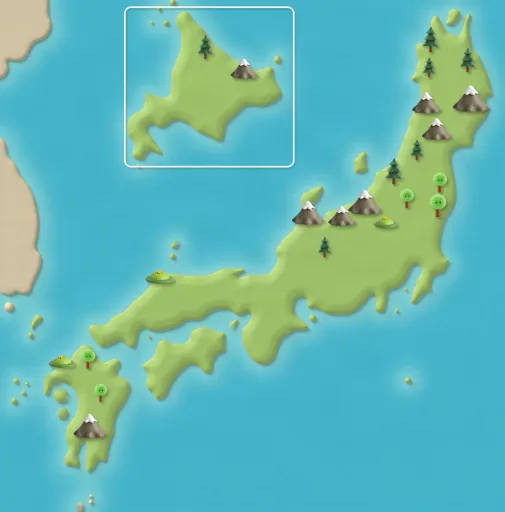
Tokyo
Route steps 1–12
Tokyo Tower
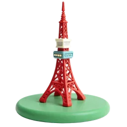
Stage 1 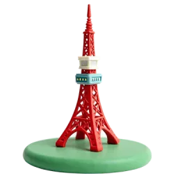
Stage 2 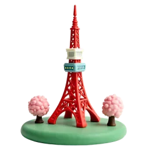
Stage 3 Tokyo Tower was inspired by the Eiffel Tower. It is painted white and orange to keep aircraft safe. Source: Wikipedia
Senso-ji and Kaminarimon
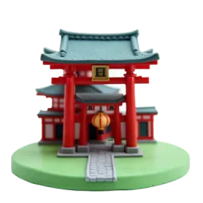
Stage 1 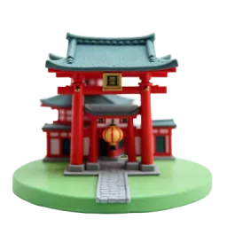
Stage 2 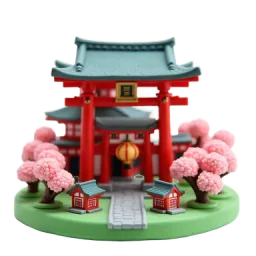
Stage 3 Senso-ji is Tokyo's oldest temple. Its Thunder Gate, Kaminarimon, holds a giant red and black paper lantern. Source: Wikipedia
Shibuya Crossing
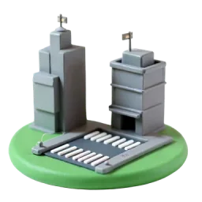
Stage 1 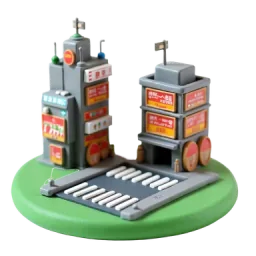
Stage 2 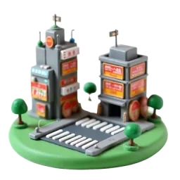
Stage 3 Up to 3,000 people can cross Shibuya Crossing during a single green light. Source: Wikipedia
Tokyo Station
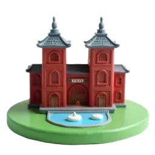
Stage 1 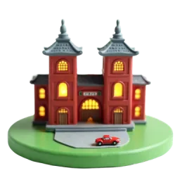
Stage 2 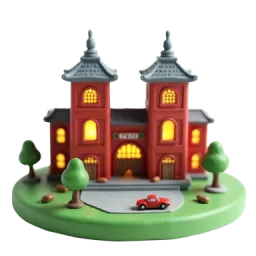
Stage 3 Tokyo Station opened on 20 December 1914. Its building was designed by architect Tatsuno Kingo. Source: Wikipedia
Fuji
Route steps 13–24
Mount Fuji
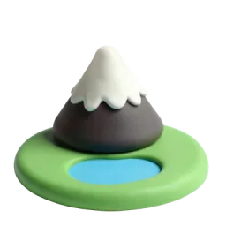
Stage 1 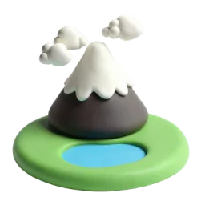
Stage 2 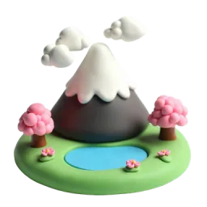
Stage 3 At 3,776 metres, Mount Fuji is Japan's highest mountain. It joined the World Heritage List in 2013. Source: Wikipedia
Chureito Pagoda
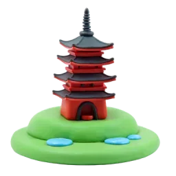
Stage 1 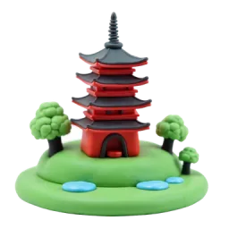
Stage 2 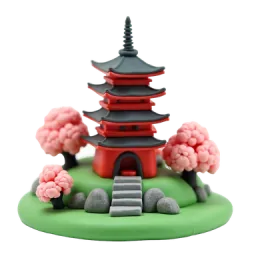
Stage 3 The red five-story Chureito Pagoda is a memorial. About 650 cherry trees bloom in the park around it. Source: Wikipedia
Lake Kawaguchi
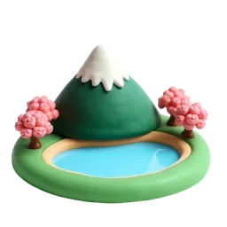
Stage 1 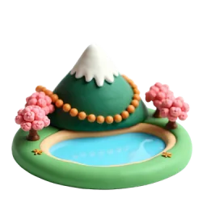
Stage 2 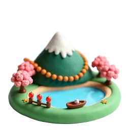
Stage 3 Lake Kawaguchi has the longest shoreline of all the Fuji Five Lakes. Source: Wikipedia
Shiraito Falls
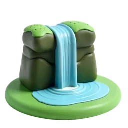
Stage 1 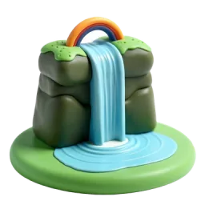
Stage 2 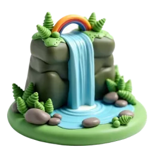
Stage 3 Shiraito Falls, about 20 metres high, became World Heritage in 2013 as part of the Mount Fuji site. Source: Wikipedia
Kyoto
Route steps 25–36
Fushimi Inari Torii Path
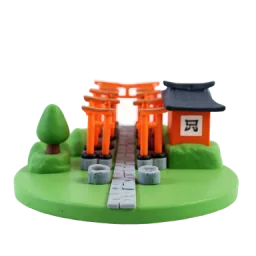
Stage 1 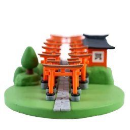
Stage 2 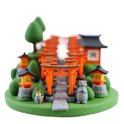
Stage 3 Fushimi Inari has about 10,000 torii gates, and each one was donated by a business. Source: Wikipedia
Kinkaku-ji
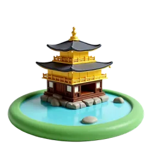
Stage 1 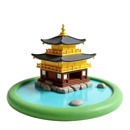
Stage 2 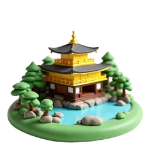
Stage 3 The top two floors of the Golden Pavilion are covered in thin gold leaf. Today's pavilion was rebuilt in 1955. Source: Wikipedia
Arashiyama Bamboo Grove
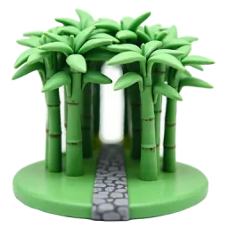
Stage 1 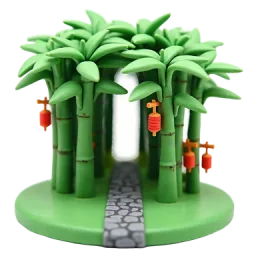
Stage 2 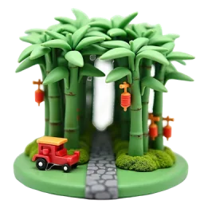
Stage 3 Japan's Ministry of the Environment counts the Arashiyama Bamboo Grove as part of the soundscape of Japan. Source: Wikipedia
Kiyomizu-dera
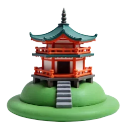
Stage 1 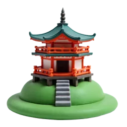
Stage 2 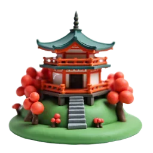
Stage 3 Kiyomizu-dera means ‘Pure Water Temple’. Its famous wooden stage was built without a single nail. Source: Wikipedia